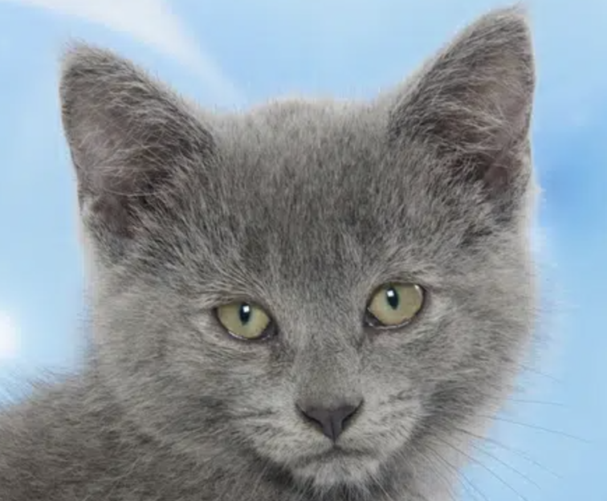
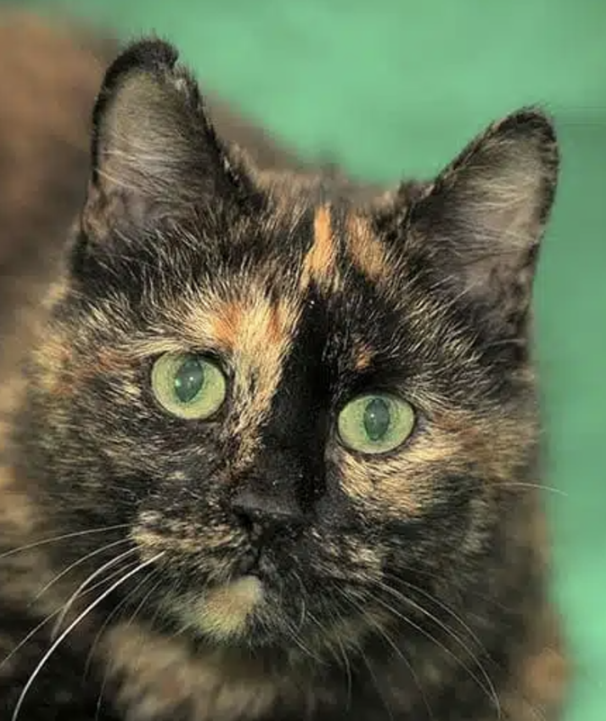

| Color | Face |
|---|---|
| Black | Source: Catster |
| Cream | Source: Catster |
| White | Source: Catster |
| Blue |  Source: Catster |
| Red | Source: Catster |
| Chinchilla |  Source: Catster
Source: Catster
|
| Bicolor | Source: Catster |
| Tabby | Source: Catster |
| Calico | Source: Catster |
| Van | Source: Catster |
| Smoke | Source: Catster |
| Shaded | Source: Catster |
| Tortoiseshell |  Source: Catster |
| Patched Tabby | Source: Catster |